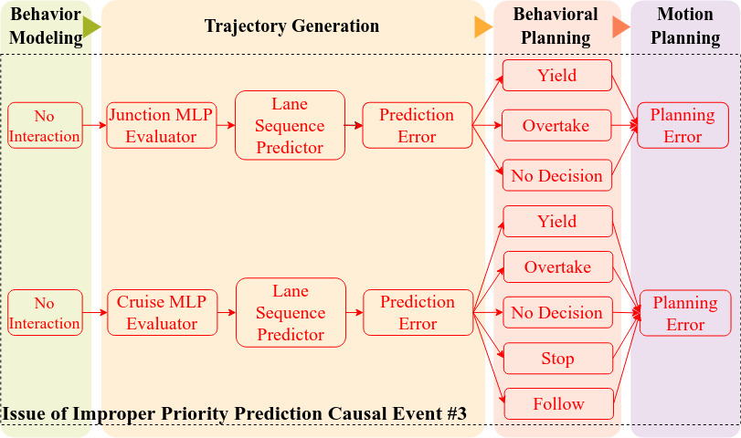
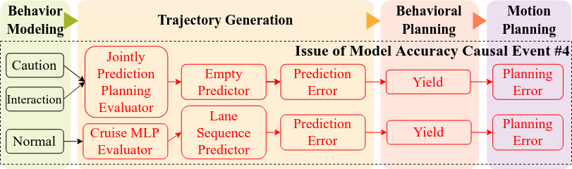
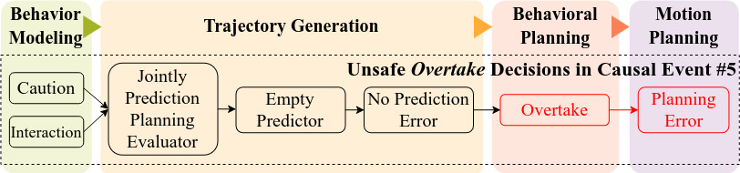
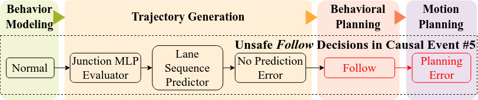
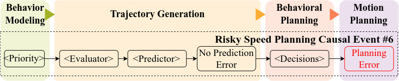

CausAVFuzzer Detected Issues
7 issues detected by CausAVFuzzer in Apollo 7
Issue#1: Improper Priority Prediction
In Causal Event #3, the AV occasionally misclassified the priorities of certain critical NPCs as "No Interaction," resulting in the assignment of inappropriate trajectory prediction models. These models failed to account for interactions between NPCs, leading to inaccurate trajectory predictions. This issue was later addressed in Apollo 9 by introducing a new model designed for multi-agent motion forecasting, the assignment of which is not determined by the "No Interaction" tag.

NOTE. The updates to the relevant main code are concentrated in the file modules/prediction/evaluator/evaluator_manager.cc. View Corresponding git commit 8ee6685.
Issue#2: Model Accuracy
Some accidents stem from inaccurate predictions of NPC trajectories, introduced by various deep learning models and propagated downstream. We observed that Apollo 7’s prediction module fails to account for NPC-to-NPC interactions, leading to misinterpretation of future behaviors. This issue was later acknowledged by Apollo developers, who in Apollo 9.0 replaced eight existing models with a new model, MULTI_AGENT_EVALUATOR, which explicitly models inter-NPC interactions.

NOTE. The updates to the relevant main code are concentrated in the file modules/evaluator/vehicle/multi_agent_evaluator.cc. View Corresponding git commit 8ee6685.
Issue#3: Unsafe Overtake Decisions
Certain Causal Event #5 accidents are linked to unsafe decisions during overtaking maneuvers. In overtaking scenarios, the planner neglected to verify whether sufficient time and distance existed to pass an NPC, resulting in side collisions. To address this, Apollo 9.0-beta added configuration parameters such as time buffers and explicit safety checks.

NOTE. The updates to the relevant main code are concentrated in the file modules/planning/tasks/speed_decider/speed_decider.cc. View Corresponding git commit ffa0765.
Issue#4: Unsafe Follow Decisions
Certain Causal Event #5 accidents are linked to unsafe decisions during following maneuvers. In the following scenarios, it failed to ensure a safe distance from the leading vehicle, causing rear-end crashes. To address these, Apollo 9.0-beta added configuration parameters such as distance buffers and explicit safety checks. Further refinements were made in Apollo 9.0-rc, including updates to margin-keeping methods and parameter tuning.

NOTE. The updates to the relevant main code are concentrated in the file modules/planning/tasks/speed_decider/speed_decider.cc. View Corresponding git commit 8ee6685.
Issue#5: Risky Speed Planning Leading to Fender Benders
In Causal Event #6, the AV sometimes experienced fender benders despite making reasonable high-level decisions. The cause lay in the speed planning functional block, which failed to maintain an adequate buffer between the AV and surrounding NPCs. This was later addressed in Apollo 9 by setting explicit margin values to prevent minor collisions.

NOTE. The updates to the relevant main code are concentrated in the file modules/planning/tasks/speed_bounds_decider/st_boundary_mapper.cc. View Corresponding git commit 33bc20e.
Issue#6: Risky Speed Planning Leading to Speeding
The planning module occasionally generated speeds that were too high. This issue stemmed from the speed planning functional block, which applied an incorrect maximum speed constraint during computation. The problem was resolved in Apollo 9.0-alpha2 and 9.0-beta by explicitly setting a proper maximum speed value.
NOTE 1. The updates to the relevant main code are concentrated in the file modules/planning/tasks/optimizers/piecewise_jerk_speed/piecewise_jerk_speed_nonlinear_optimizer.cc. View Corresponding git commit 263d5b7.
NOTE 2. The updates to the relevant main code are concentrated in the file modules/planning/tasks/piecewise_jerk_speed/piecewise_jerk_speed_optimizer.cc. View Corresponding git commit 33bc20e.
Issue#7: Risky Speed Planning Leading to unsafe accelerations
The planning module occasionally generated excessively high acceleration values. This issue originated from the speed planning functional block, which used incorrect maximum acceleration and jerk constraints during computation. It was resolved in Apollo 8 and 9.0-beta by explicitly setting appropriate maximum acceleration and jerk values.
NOTE 1. The updates to the relevant main code are concentrated in the file modules/planning/tasks/optimizers/piecewise_jerk_speed/piecewise_jerk_speed_nonlinear_optimizer.cc. View Corresponding git commit 263d5b7.
NOTE 2. The updates to the relevant main code are concentrated in the file modules/planning/tasks/piecewise_jerk_speed/piecewise_jerk_speed_optimizer.cc. View Corresponding git commit ffa0765.